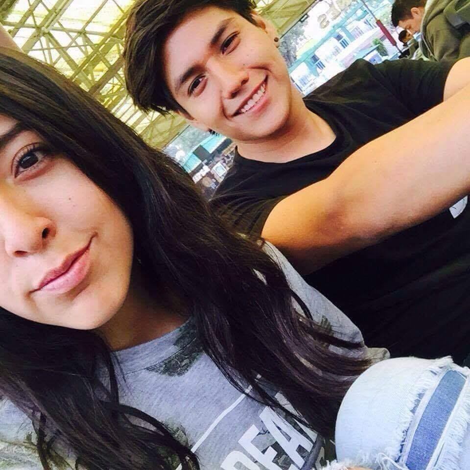

Hola! Soy de Ciudad de México. Me considero una persona sociable y alegre, siempre estoy dispuesto a compartir buenos momentos con los demás. Aunque al principio me puede costar un poco iniciar una conversación, una vez que entro en confianza, disfruto mucho conocer gente nueva y crear buenas amistades. Soy técnico en computación y también estudié la ingeniería en computación, lo que me ha permitido desarrollar habilidades en teconología. Me gusta el autoaprendizaje y siempre busco maneras de seguir creciendo.

Es de mis fotos favoritas, porque fue la primer foto con mi pareja hace 9 años. La conocí de una forma bien random en la feria de Chapultepec, en los carros chocones. Yo ya estaba sentado esperando, no había carros libres y justo cuando ella se iba a salir de la pista, le dije que se subiera y así íbamos a chocar a sus primos con los que iba.